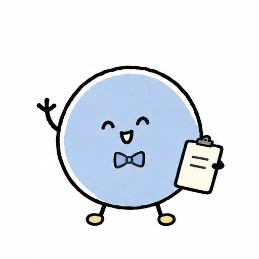
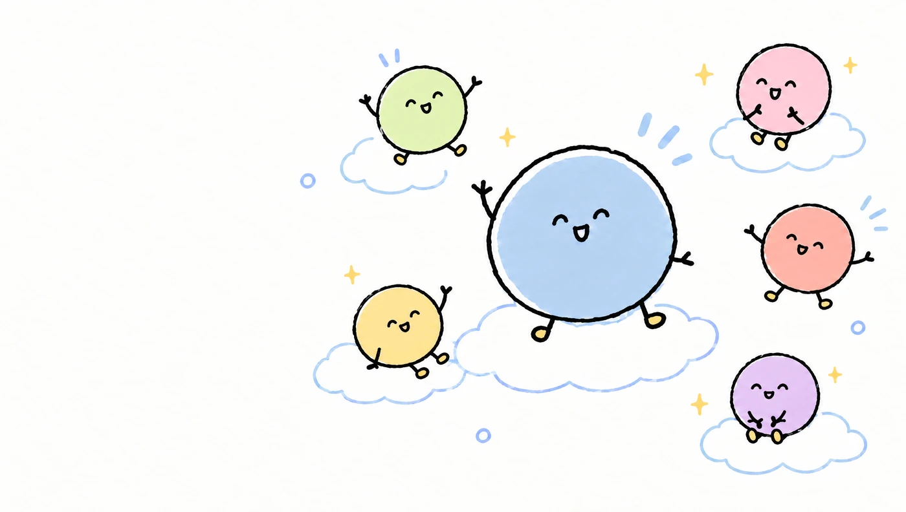

사장님을 위한 샵 AI 에이전트
사장님 곁에,
라미가 왔어요.
손님에게는 편한 대화를, 사장님에게는 든든한 도움을.
메뉴를 알려주면, 라미가 우리 샵의 이야기를 시작해요.


안녕하세요, 저는 라미예요.우리 샵 이야기를 들려주세요!
식당에도. 카페에도. 작은 우리 샵에도.
지금은 준비된 시나리오로 만나보는 출시 전 데모예요.
 우리 샵을 알아가는 첫걸음
우리 샵을 알아가는 첫걸음AI 공부보다,
우리 샵 이야기부터.
바쁜 사장님이 새로운 도구를 배우는 데
시간을 쏟지 않아도 되도록.
메뉴판 사진과 샵 정보를 라미에게 알려주세요. 메뉴와 가격을 확인하면, 손님이 찾아올 샵 링크와 QR이 준비돼요.
샵을 준비하는 과정 보기손님이 오면,
라미와 함께 시작해요.
처음 만난 손님과도 편하게.
손님부터 주방까지, 한 주문을 함께 이어봐요.

아래 대화와 주문은 이해를 돕는 샘플이에요.

반가워요! 어떤 언어가 편하세요?라미가 손님의 언어로 안내해요.
